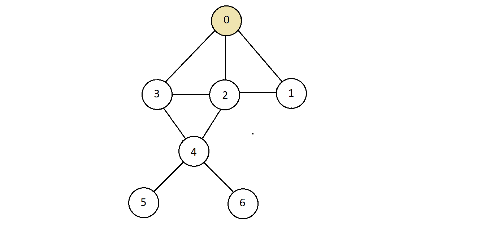
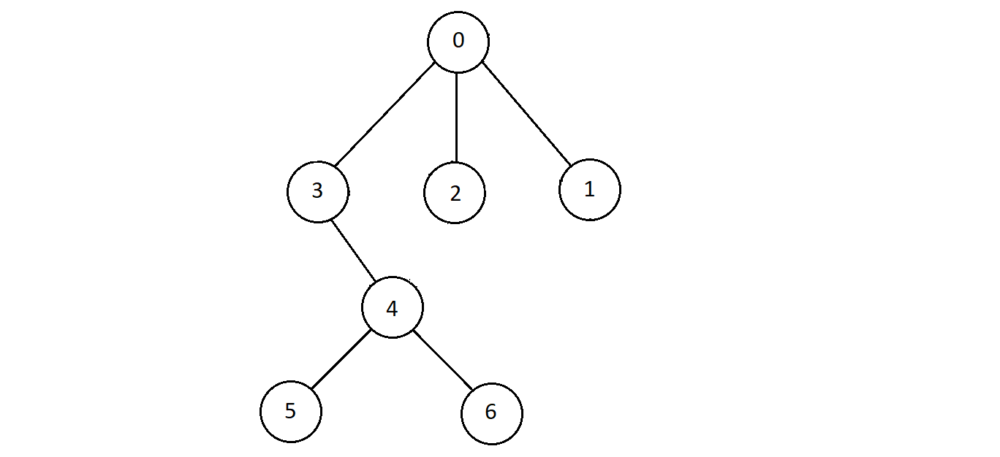
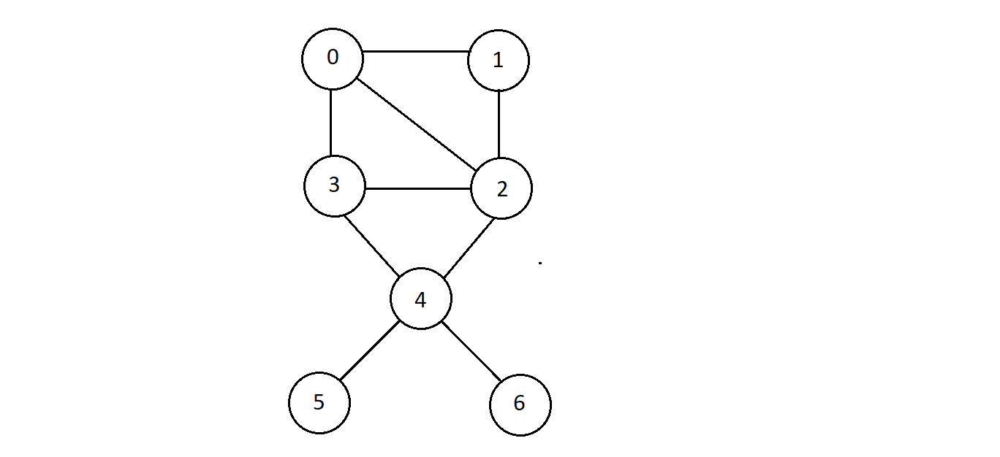
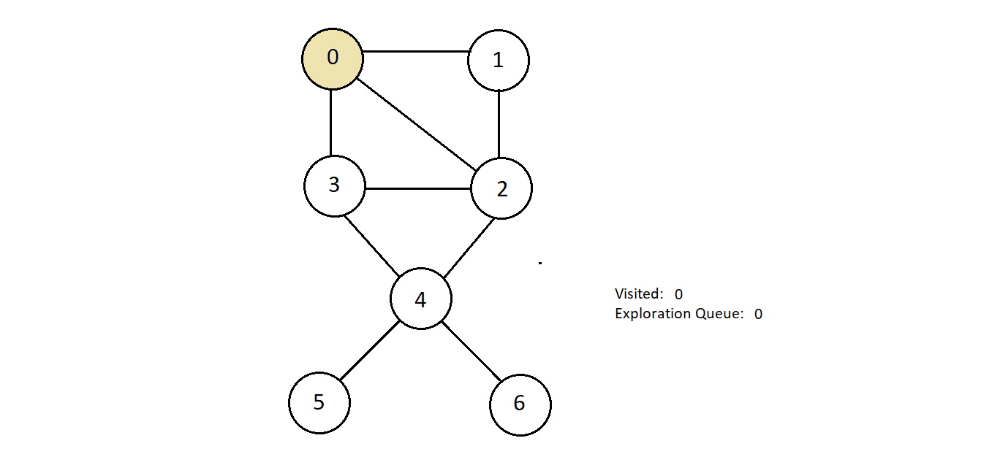
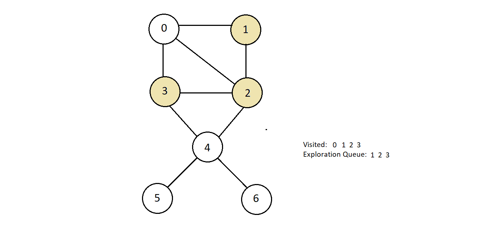
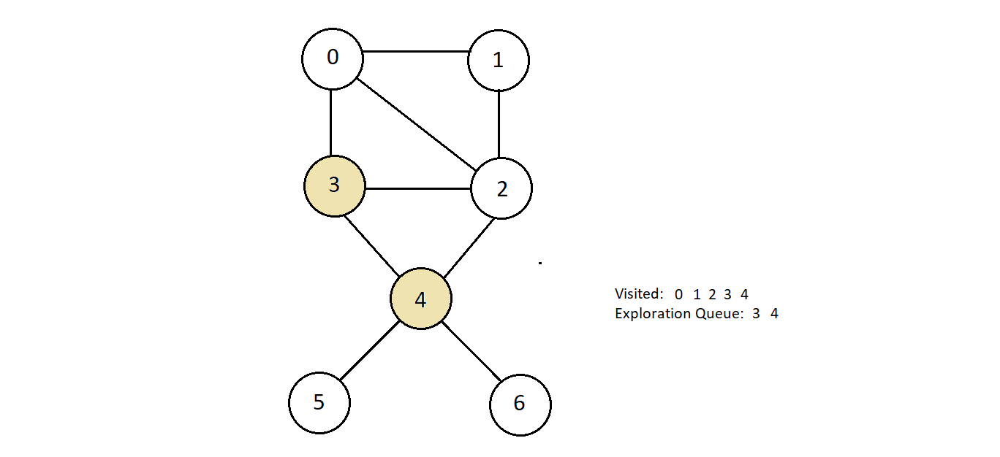
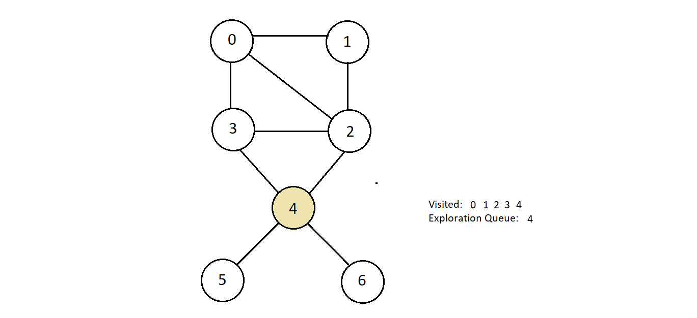
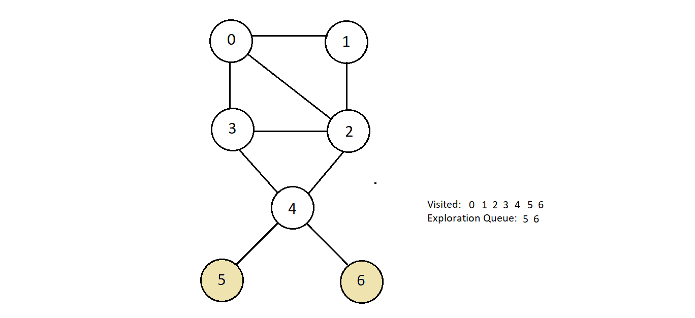
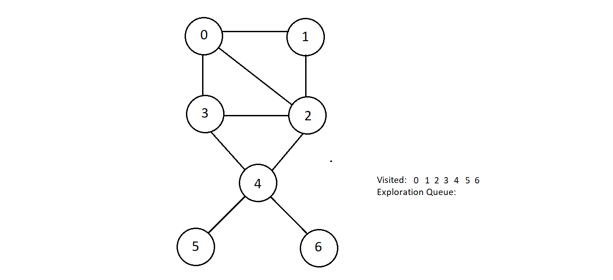
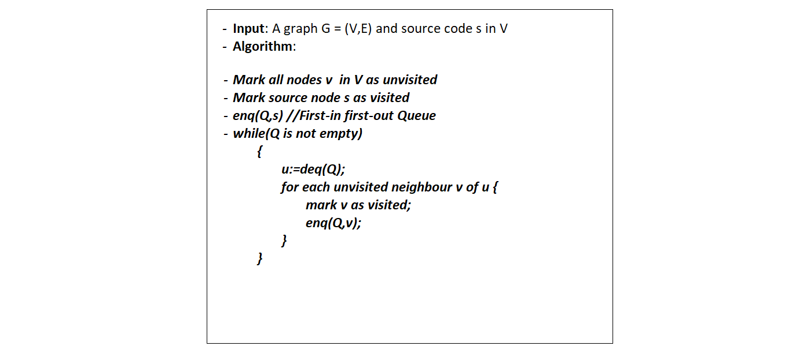

Breadth First Search Graph Traversal
What is Breadth First Search?
- In breadth first search, start with a node (not necessarily the smallest or the largest) and start exploring its connected nodes.
- The same process is repeated with all the connecting nodes until all the nodes are visited.
- We should first learn the concept of BFS spanning tree in order to understand the breadth first search.
Method 1: BFS Spanning tree:
- Consider the graph below

- Now, choose any node, say 0, and try to construct a tree with thise chosen node as its root.
 - Now, mark dashed or simply remove all the edges which are either sideways or duplicate to turn
this graph into a valid tree,
- And as you know for a graph to be a tree, it shouldn't have any cycle.
- So, we remove the edges between nodes 2 and 3, and then between nodes 1 and 2 being sideways.
- Then also between 2 and 4. You could have rather removed the one between node 3 and 4 instead of 2 and 4, but both ways work since these are duplicate to node 4.
- The tree we receive after we do these above mentioned steps changes to
 - This constructed tree above is known as a BFS Spanning Tree.
- The level order traversal of this BFS spanning tree gives us the breadth first search traversal
of the graph we started originally with
- Level order traversal → we simple wirte the nodes in the same level from left to right.
- So, the level order traversal of the above BFS spanning tree is 0, 3, 2, 1, 4, 5, 6
Method 2: Conventional Breadth First Search Traversal Algorithm
- Consider the graph below
 - Considering we could begin with any source node, we'll start with 0 only.
- Let's define a queue named exploration queue which would hold the nodes we'll be exploring one by one
- We would maintain another array holding the status of whether a node is already visited or not.
- Since we are starting with node 0, we would enqueue 0 into our exploration queue and mark it
visited
 - Now, we'll start visiting all the nodes connected to node 0, and remove node 0 from the exploration queue, enqueuing all the currently visited nodes which were nodes 1, 2 and 3.
- We are pushing them inside the exploration queue because these might further have some unvisited
nodes connected to them. Mark these nodes visited as well.
 - After this, we have node 1 at the top in the exploration queue, so we'll take it out and visit
all unvisited nodes connected to it. Unforturnately, there aren't any. Therefore, we'll continue
exploring further.
- Next, we have node 2. And the only unvisited node connected to node 2 is node 4.
- So, we'll mark it visited and will also enqueue it in our exploration queue.
 - Node 3 is the next in line. Since, all nodes 1, 3 and 4 which are the nodes connected to it are
already visited, we have nothing to do here while we are on node 3.
 - Next, we have node 4 on the top in the exploration queue. Let's get it out and see what nodes
are connected and unvisited to it. So, we got nodes 5 and 6. Mark them visited and push them
inside the exploration queue.
 -
And now we can explore the other two nodes left in the queue, and since all nodes are already
visited, we’ll get nothing in them. And this got our queue emptied and every node traversed in
Breadth-First Search manner.
 - And the order in which we marked our nodes visited is the Breadth-First Search traversal order. Here, it is 0, 1, 2, 3, 4, 5, 6.
- So basically, the visited array maintains whether the node itself is visited or not, and the exploration queue maintains whether the nodes connected to a node are visited or not. This was the difference.
Let's now see how the process we did manually above can be automated in C although we will be using pseudocode for now.
- We'll take a whole graph and the information about its nodes and eges as the input along with the source node s.
- We'll mark the node s visited and then create a queue, and enqueue s in it.
- We'll then initiate a while loop which run until the queue is not empty. At each iteration, we will take out the first element out of the queue, and visit all the vertices already not visited and connected to it while enqueueing every new node we visit in the queue.
- Below is the pseudocode,

- Few important points
- We can start with any vertex.
- There can be multiple breadth first search results for a given graph
- The order of visiting vertices can be anything.
- The order of visiting vertices can be anything.